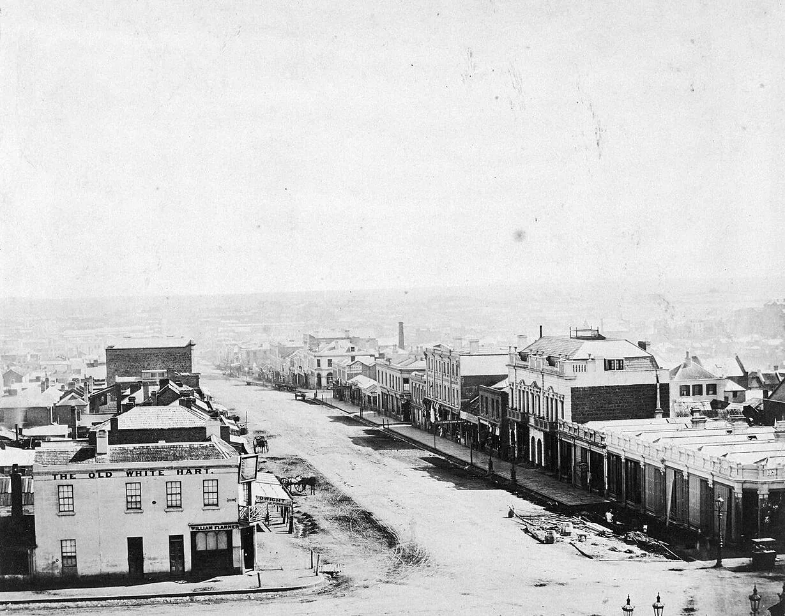
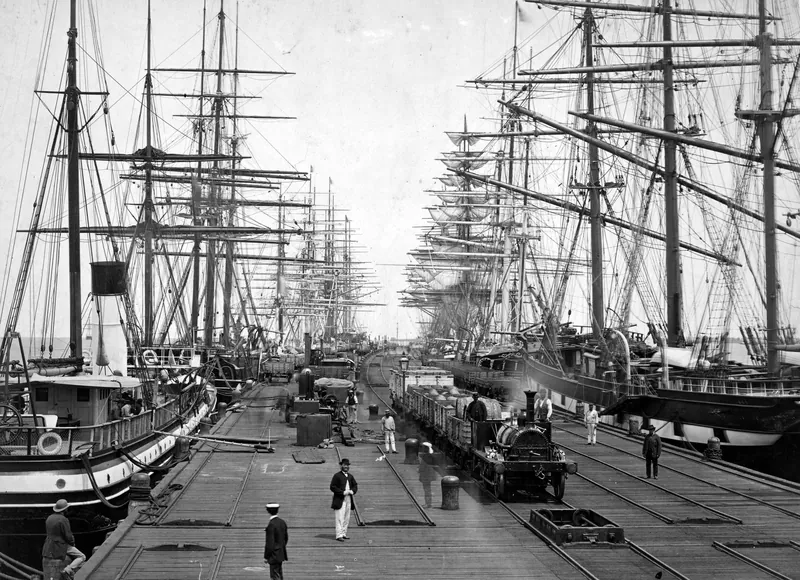
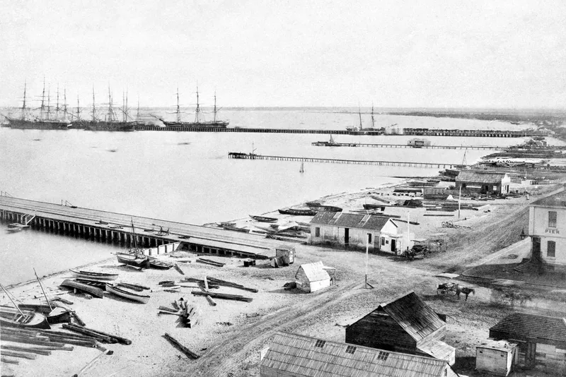
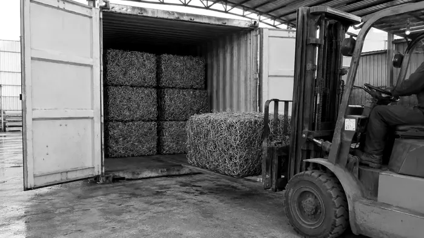

Where it started · 1857
Recycling in Victoria is older than the word.
In 1857, Robert Hyde & Co. ran a marine store in Melbourne. It bought rags, glass and metal from a gold-rush city and shipped them back into use. The firm is long gone. The trade isn't.
Bourke Street, about 1858. Antoine Fauchery. State Library Victoria
A penny that doubled as an advert.
Melbourne was short of small change in the 1850s, so traders struck their own copper pennies and halfpennies. Robert Hyde & Co.'s token says exactly what the business did: a general marine store, shippers of rags, glass and metals.
- Material
- Copper
- Sizes
- 28 mm halfpenny, 34 mm penny
- Reverse
- Peace & Plenty, Advance Australia
- Held by
- Museums Victoria
The token here is redrawn from the legend Museums Victoria records. The second one is a concept: a Recycled Metals token, struck from copper dropped off at the gate.
02 · The record
Twenty years of a Melbourne marine store.
Tokens, newspaper ads, directory listings and a report on the trade. Every stop below links to the source it comes from.
-
1857
The token
Robert Hyde & Co. issues copper trade tokens, probably struck by Heaton & Sons of Birmingham.
Museums Victoria -
1861
A second issue
A second run of tokens. Hyde's Marine Store advertises in The Argus from Albert Street, East Melbourne.
The Argus, 12 March 1861 (Trove) -
1862
In the directory
Listed for the first time in a Melbourne directory: marine store, 11 Albert Street, East.
Museums Victoria -
1863
Shipping to England
The Age names Hyde's as Melbourne's principal rag exporter: about 500 tons of rags a year to England, along with zinc and broken glass. From 1863 to 1865 the business trades as Hyde, Hodgson & Co.
The Age, 19 January 1863 (Trove)
Railway Pier, Sandridge, about 1875. Charles Nettleton. State Library Victoria -
1868
Rags, then metal again
Listed as a rag merchant at 120 Lonsdale Street West, then as a marine store again in 1869 and 1870.
Hyde's Rag Store notice, 1869 (Trove) -
1872
-
1878
Probate
Probate granted for a Robert Hyde of Richmond, marine store dealer, very likely the same man. No successor business has been found.
Public Record Office Victoria, VPRS 28, 17/144
03 · Then and now
Same trade, different century.
Sail ships at Sandridge took Melbourne's rags, zinc and glass to England. Today the metal comes in through the gate at North Geelong, gets sorted and baled, and goes back into use.


- What came in
- Rags, bottles, old rope, bones and metal
- Steel, copper, aluminium, brass, whitegoods, machinery: 865 items
- Where from
- A fast-growing gold-rush city
- Sheds, farms, councils, sites and businesses, Werribee to Portland
- How it moved
- By cart to the store, by sail to England
- Ute, trailer, bin, tilt tray or B‑double
- Where it went
- Shipped on to England for reuse
- Weighed, docketed, sorted and sent back into use
04 · Straight up
The inspiration, not the ancestry.
- Recycled Metals is a Recycle Group business. It is not the original Robert Hyde & Co. and claims none of its years.
- Hyde's wasn't Melbourne's first marine store. Unnamed ones appear in the papers from 1841, and Blackmore of Bourke Street by 1848.
- Hyde's is one of the early ones that left a trail: tokens, ads, directory listings and a newspaper report on its trade.
- The trade it stood for, taking what a city throws out and sending it back into use, is the one Recycled Metals carries on.
What was a marine store? A colonial dealer in second-hand goods and scrap: old rope and ships' stores, bottles, rags, bones and metal.
Since before the word
The firm is gone. The trade isn't.
Bring it to Recycled Metals: free drop-off at 116 Furner Avenue, North Geelong, any volume.
Sources and image credits
- Robert Hyde & Co. halfpenny token, 1857. Museums Victoria
- Robert Hyde & Co. halfpenny token, 1861. Museums Victoria
- Robert Hyde & Co., Merchants, Melbourne. Museums Victoria
- Hyde's Marine Store advertisement. The Argus, 12 March 1861 (Trove)
- Report on Melbourne's rag export trade. The Age, 19 January 1863 (Trove)
- Hyde's Rag Store auction notice, 1869 (Trove)
- R. Hyde, Little Bourke Street, 1872 (Trove)
- Probate file for Robert Hyde, VPRS 28, 17/144. Public Record Office Victoria
- Blackmore, marine store dealer, Bourke Street, 1848 (Trove)
- Historic photographs: State Library Victoria, public domain, shown here in black and white.